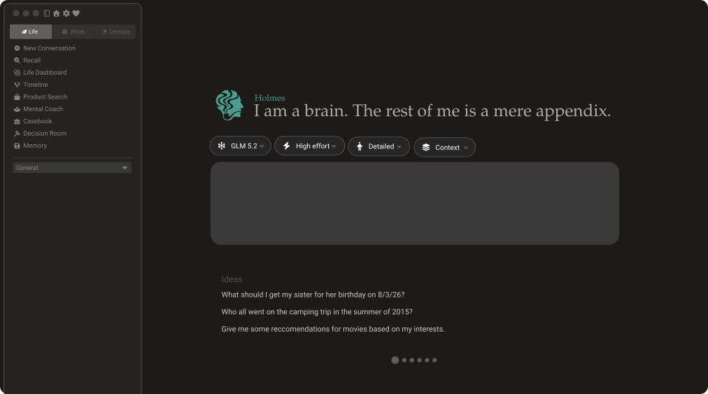
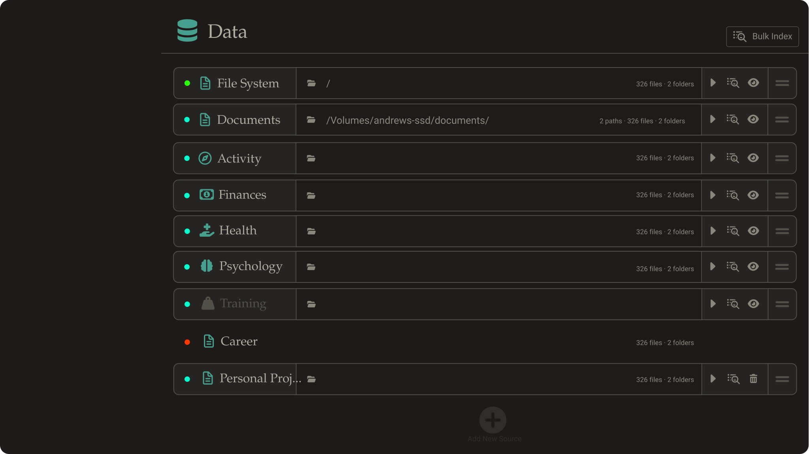

Open source, AGPL-3.0 · macOS · Not released yet
Years of it, sitting on tech giants’ servers — indexed, queryable, and useful to every company holding a copy. Holmes reads the same archive on your own computer, and answers to you.
Evidence
The asymmetry
Every service you have used will mail you an archive of what it holds on you — the request button exists because the record does. What arrives is searchable in the worst possible way: by filename, one archive at a time, with no idea what you are looking for.
Holmes reads the whole thing once and keeps reading what changes. It writes a summary of every file, then of every folder, then of your life, and hangs a dated record off all of it. The folder stops being an archive and starts being a witness.
What it can read
You choose the folders. Nothing is discovered behind your back, and a source you disconnect takes everything derived from it with it.
How it reads
Four layers, each one written from the layer beneath it. That shape is the whole design: it is what keeps a life-sized question inside a model’s context window, and it is what makes every answer traceable.
your life
One super-context over every source you did not mark as separate. A project set to separate is still fully indexed and still keeps its own timeline — it just never reaches this layer.
└─ a source
One connected folder, and the conversations you have had about it. A project can hold several sources; with more than one, their roots are combined into a single picture of that project.
└─ a folder
Synthesized from the summaries of its children, never from the files again. Children the input budget had to drop are recorded as dropped, so a synthesis can’t quietly look more complete than it is.
└─ a file
The only level that reads your bytes. Text is extracted and redacted, then summarized. Images are downscaled to 768 px and described by a vision model — a full-resolution photo costs about 16,000 image tokens, the same photo at 768 px costs about 590.
Nothing generated is thrown away. Regenerating a context files the old one as a version rather than overwriting it, and a rebuild that stops seeing a fact marks it archived instead of deleting it — it was true when it was written.
Provenance
By the top layer an answer is four levels of summary away from anything real. Without stored pointers there is no path back, so each node records exactly which inputs produced it, with each child’s content hash as of that moment.
Ask for the chain and Holmes walks those edges down to a file path and a line range — then re-reads the file through the same pipeline the indexer used and shows you the text. If the file changed since indexing, it shows you nothing rather than the wrong line.
The model supplies numbers — [L42-58] — and a range past the last line it was shown is rejected. The words you read come off disk.
Only inputs that actually reached the prompt get a tag. A marker with no matching input is dropped, because at that point it can only be invented.
Markers are stripped after the spans are recorded. Chat, memory and the timeline all read that text, and none of them should be reading citation syntax.
The part most pages skip
Holmes is local-first, not offline. Your archive, the index and everything derived from it stay on your machine. Reading them takes a language model, and unless that model is running on your own hardware, the text goes somewhere. Here is exactly where.
One SQLite file under ~/Library/Application Support/holmes/ holds the index, the timeline, memory and every conversation. Provider keys live in electron-store; account credentials live in the macOS Keychain.
No account, no sign-in, no telemetry, no server — there is nothing to sync to. The database is an ordinary file, not an encrypted vault: if that matters for your threat model, the volume is the place to encrypt it.
OpenRouter, any OpenAI-compatible endpoint, or Ollama on your own machine — with Ollama nothing leaves at all. Everything else sends the text being summarized, plus downscaled images when a photo is indexed.
Everything is redacted first: API keys, passwords, card numbers, SSNs, and for health material also MRN, NPI, date of birth, chart account numbers and phone numbers. Sensitive memory categories are gated behind an explicit flag rather than a default.
An index run is quoted up front — tokens, dollars, hours — from live model pricing, minus everything already cached. A model with no published price is quoted as unknown, never as free.
Estimating walks your whole directory tree, so it only ever happens when you press the button.
Every provider call is recorded with its model, tokens, cost and which feature made it — indexing, the timeline, a background pass, or you. It is recorded in the network layer, so no feature can make a call that escapes the log.
Three refusals for credit in a row and billed calls stop locally until you clear them. One switch pauses every background timer, including work already in flight.
Bulk indexing is paced to your key’s rate limit — 20 requests a minute by default — and at scale that limit, not your CPU, sets the wall clock. As a rough shape: 236 documents took 55 minutes. A photo library is a project you start on purpose and leave running, and background timers never begin one.
The app
One conversation, with the model, the reasoning effort, how much of your memory it may see, and which sources are stacked as context — all chosen above the box, per message.

One row per connected source. The dot is index state — teal when a source is fully indexed, green when it is attached but the run hasn’t finished, red when the directory is unreachable. Dimmed rows are hidden, and hidden means hidden everywhere.

Design mockups, drawn from the running app. Where they differ from the build, the build wins: its sidebar names the modes Think, Work and Code, and carries more pages than are shown here.
Shipping
Ask with any combination of sources stacked as context. Search across Spotlight and every past conversation. Read the life picture, or the dated record it was built from.
Shipping
Connect and index sources; keep a structured memory across 25 categories in three disclosure modes; ingest health records; resolve the people who recur across everything; read your shelf with narrated read-along.
Not yet
Visible in the interface and deliberately disabled. Think mode is the one that works, and the sidebar says so rather than pretending otherwise.
There is also an iOS client: a thin remote that holds no database and no key, reaching a running desktop over your own Tailscale network. Every channel it can call is on an explicit allowlist that defaults to deny, and a device paired as a guest reaches the book shelf and nothing else.
The timeline
Each layer of the context tree ends its output with a dated block. Holmes harvests those from every file, folder, analysis and memory summary, merges the duplicates, and stores what is left as one record — so a question can cross from your calendar into your sleep data and back without you filing anything.
The record thickens where the data does. Almost nobody has a queryable archive before about 2009 — which is exactly when the services that keep one arrived. Holmes shows that honestly rather than inventing a childhood.
A date is evidence, not a guess. A date stated inside the data beats one in the file name, which beats the file’s modified time. Precision can be widened by evidence and never sharpened, so a fact known only to a year is never narrated as a specific day — and a model that cannot date something is told to leave it undated.
Rebuilds merge rather than replace: an event whose source stops reporting it is marked archived, not deleted, because it was true when it was written. Anything you add by hand survives every rebuild.
Built on the same index
Life Dashboard
The apex of the context tree, in plain prose, at the top of the page: what Holmes has concluded about you from everything you have connected — with its provenance attached, so you can walk any sentence back down to the file it came from.
Under it sits a card per life source — Psychology, Health, Activity, Finances, Training — and the people who recur across all of them, resolved into one list rather than one per source. Sources you hide disappear from here too; hidden means hidden everywhere.
Library, reader and lessons
Point Holmes at a shelf of EPUBs and PDFs and it becomes a reader. It will narrate a book aloud with the words highlighted as they are spoken, annotate it as you go, and turn a run of chapters into a lesson — concepts, questions and a model answer, each citing the passage it came from.
Annotations are anchored to the quote plus the 32 characters either side, so they survive the book being re-scanned and say so when they cannot. Narration is priced before it runs.
Book text never enters the profile. A shelf is scanned into the Library, never into document contexts. Only the reading record — what you read, and when — reaches the life picture, because a library is evidence about you and its contents are not.
What it concludes
Holmes keeps a standing analysis per life source, refreshed as the sources change, and each one is written to state what it measured, over what window, from which records. These are the shapes those analyses come back in.
Psychology · trait and cognitive style
Conscientiousness sits high and barely moves across eleven years of your own writing. Openness climbs from 2019 — and the shift shows up first in what you started reading.
drawn from Documents/ · 2,140 files · 61 conversations · the Books reading record
Health · domain score, with its trend
Sleep is declining. Median duration is down 71 minutes since February 2023 and resting heart rate is up 6 bpm across the same window — the two move together.
drawn from health/export.xml · 41,900 observations
Health · interaction and open thread
Two entries in your current regimen share a metabolic pathway. Both are named, the interaction is graded, and the question a clinician would want to ask is written out — with no suggestion that you change either one.
drawn from the regimen list · bloodwork PDFs · MyChart records
Activity · a pattern across two sources
Messages sent after 23:00 rise fourfold in the four months with the least daylight, and fall back every March.
drawn from chat.db metadata · location history · weather history
People · one person, resolved across everything
Marcus Reyes: 214 photographs, 4,100 messages, four project documents, and a standing Thursday dinner from 2017 to 2019. Nothing dated after August 2021.
drawn from Photos · Messages · Documents · Calendar
Finances · what is actually running
$142 a month across 19 active subscriptions. Three began in the same week of 2024, and two of the three have not appeared in your activity since.
drawn from order history · email receipts · app usage
Illustrative — the shapes are real, the person is not.
That is not a disclaimer bolted on afterwards; it is written into the prompts. The health analysis is instructed to synthesise rather than diagnose, to flag its uncertainties and follow-ups explicitly, and to never advise starting, stopping or changing a medication or dose — that is the prescriber’s call, not a model’s.
The mental-coach role is held to the same line: no diagnosis, no diagnostic label, no severity rating, no score. It may say that something you described resembles what a clinician would assess for, and that assessment is how you find out. That is a signpost, not a verdict.
Length has to buy specificity or evidence. Where the records carry real signal, the summary is asked for measured trends with their values, units and dates, and for what is still unresolved. Where they do not, a shorter honest answer is the correct one — padding is ruled out in the instruction itself.
You can also sit nine standard instruments inside Holmes — Mini-IPIP, GAD-7, PHQ-9, Rosenberg, WHO-5, PSS-10, PC-PTSD-5, AUDIT-C and ASRS-6. The results are filed as dated evidence on the timeline, alongside everything else, rather than as a label attached to you.
And every line above traces back the same way the rest of the page describes: claim, file, line.
Why AGPL
Rewind built the best local memory tool anyone had shipped, and its whole pitch was that your data never left your Mac. That pitch was only ever as durable as the company holding it.
A promise a company makes can be sold. A promise the license makes cannot.
Holmes is AGPL-3.0. Fork it, audit it, keep running it after I lose interest. There is no company here to acquire and no server to switch off.
What happened
Holmes solves a different problem — it never watches your screen, and it only reads what you hand it. The lesson it takes from Rewind is about ownership, not about capture.
Status
It runs, it is used daily, and it is not packaged for anyone else. There is no installer, no signed build and no release to point you at. When there is, it will be on the repository — and so is every line of it in the meantime.
What you’ll need, when it ships